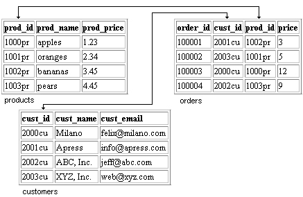
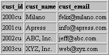
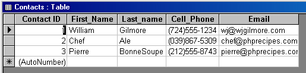
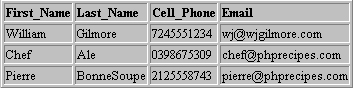
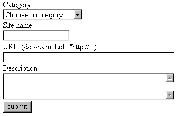
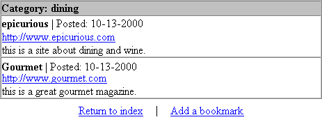

Базы данных
Средства эффективного хранения и выборки больших объемов информации внесли огромный вклад в успешное развитие Интернета. Обычно для хранения информации используются базы данных. Работа таких известных сайтов, как Yahoo, Amazon и Ebay, в значительной степени зависит от надежности баз данных, хранящих громадные объемы информации. Конечно, поддержка баз данных ориентирована не только на интересы гигантских корпораций — в распоряжении web-программистов имеется несколько мощных реализаций баз данных, распространяемых по относительно низкой цене (а то и бесплатно).
Правильная организация базы данных обеспечивает более быстрые и гибкие возможности выборки данных. Она существенно упрощает реализацию средств поиска и сортировки, а проблемы прав доступа к информации решаются при помощи средств контроля за привилегиями, присутствующими во многих системах управления базами данных (СУБД). Кроме того, упрощаются процессы репликации и архивации данных.
Глава начинается с подробного описания выборки и обновления данных в MySQL — вероятно, самой популярной СУБД, используемой в PHP (http://www.mysql.com). На примере MySQL будет показано, как в РНР происходят загрузка и обновление данных в базе; мы рассмотрим базовые средства поиска и сортировки, используемые во многих web-приложениях. Затем мы перейдем к реализованной в РНР поддержке ODBC (Open Data Base Connectivity) — обобщенного интерфейса, который может использоваться для одновременного соединения с разными СУБД. Поддержка ODBC в РНР будет продемонстрирована на примере соединения и выборки данных из базы данных Microsoft Access. Глава завершается проектом, в котором РНР и СУБД MySQL используются для создания иерархического каталога с информацией об избранных сайтах. При включении в каталог новых сайтов пользователь относит их к одной из стандартных категорий, определяемых администратором сайта.
Прежде чем переходить к обсуждению MySQL, я хочу сказать несколько слов об SQL — самом распространенном языке для работы с базами данных. Язык SQL заложен в основу практически всех существующих СУБД. Чтобы перейти к рассмотрению примеров работы с базами данных, необходимо хотя бы в общих чертах представлять, как работает SQL.
SQL обычно описывается как стандартный язык, используемый для взаимодействия с реляционными базами данных (см. ниже). Однако SQL не является языком программирования, как С, C++ или РНР. Скорее, это интерфейсное средство для выполнения различных операций с базами данных, предоставляющее в распоряжение пользователя стандартный набор команд. Возможности SQL не ограничиваются выборкой данных из базы. В SQL поддерживаются разнообразные возможности для взаимодействия с базой данных, в том числе:
Обратите внимание: в определении SQL было сказано, что этот язык предназначен для работы с реляционными базами данных. В реляционных СУБД данные организуются в виде набора взаимосвязанных таблиц. Связи между таблицами реализуются в виде ссылок на данные других таблиц. Таблицу можно представить себе как двухмерный массив, в котором расположение каждого элемента характеризуется определенными значениями строки и столбца. Пример реляционной базы данных изображен на рис. 11.1.

Рис. 11.1. Пример реляционной базы данных
Как видно из рис. 11.1, каждая таблица состоит из строк (записей) и столбцов (полей). Каждому полю присваивается уникальное (в рамках данной таблицы) имя. Обратите внимание на связь между таблицами customer и orders, обозначенную стрелкой. В информацию о заказе включается короткий идентификатор клиента, что позволяет избежать избыточного хранения имени и прочих реквизитов клиента. В изображенной базе данных существует еще одна связь — между таблицами orders и products. Эта связь устанавливается по полю prod_id, в котором хранится идентификатор товара, заказанного данным клиентом (определяемого полем custjd). Наличие этих связей позволяет легко ссылаться на полные данные клиента и товара по простым идентификаторам. Правильно организованная база данных превращается в мощное средство организации и эффективного хранения данных с минимальной избыточностью. Запомните эту базу данных, я буду часто ссылаться на нее в дальнейших примерах.
Итак, как же выполняются операции с реляционными базами данных? Для этого в SQL существует специальный набор общих команд — таких, как SELECT, INSERT, UPDATE и DELETE. Например, если вам потребуется получить адрес электронной почты клиента с идентификатором 2001cu (см. рис. 11.1), достаточно выполнить следующую команду SQL:
SELECT cust_email FROM customers WHERE custjd = '2001cu'
Все вполне логично, не правда ли? В обобщенном виде команда выглядит так:
SELECT имя_поля FROM имя_таблицы [ WHERE условие ]
Квадратные скобки означают, что завершающая часть команды является необязательной. Например, для получения адресов электронной почты всех клиентов из таблицы customers достаточно выполнить следующий запрос:
SELECT cust_email FROM customers
Предположим, вы хотите включить в таблицу products новую запись. Простейшая команда вставки выглядит так:
INSERT into products VALUES ('1009pr', 'Red Tomatoes', '1.43');
Если позднее эти данные потребуется удалить, воспользуйтесь следующей командой:
DELETE FROM products WHERE prod_id = 1009r';
Существует много разновидностей команд SQL, и полное их описание выходит за рамки этой книги. На эту тему вполне можно написать отдельную книгу! Я постарался сделать так, чтобы команды SQL, используемые в примерах, были относительно простыми, но достаточно реальными. В Web существует много учебной информации и ресурсов, посвященных SQL. Некоторые ссылки приведены в конце этого раздела.
 Записывать
команды SQL символами верхнего регистра
необязательно. Впрочем, я предпочитаю
именно такую запись, поскольку она помогает
различать компоненты запроса.
Записывать
команды SQL символами верхнего регистра
необязательно. Впрочем, я предпочитаю
именно такую запись, поскольку она помогает
различать компоненты запроса.
Раз вы читаете эту книгу, вероятно, вас интересует вопрос, как же организуется работа с базами данных в среде Web? Как правило, сначала при помощи какого-
либо интерфейсного языка (РНР, Java или Perl) создается соединение с базой данных, после чего программа обращается к базе с запросами, используя стандартный набор средств. Интерфейсный язык можно рассматривать как своего рода «клей», связывающий базу данных с Web. Я перехожу к своему любимому интерфейсному языку — РНР.
Дополнительные ресурсы
Ниже перечислены некоторые ресурсы Интернета, посвященные SQL. Они пригодятся как новичкам, так и опытным программистам.
Если бы мне предложили назвать самый важный аспект РНР, вероятно, я бы остановился на поддержке баз данных. В РНР реализована обширная поддержка практически всех существующих серверов баз данных, в том числе:
|
Adabas D |
Informix |
PostgreSQL |
|
Dbase |
Ingres |
Solid |
|
Direct MS-SQL |
InterBase |
Sybase |
|
Empress |
mSQL |
UNIX dbm |
|
File-Pro (read-only) |
MySQL |
Velods |
|
FrontBase |
ODBC |
|
|
IBM DB2 |
Oracle (OCI7 и OC18) |
Как показывает этот список, поддержка баз данных в РНР простирается от совместимости с базами данных, известных всем (например, Oracle), до тех, о которых многие даже не слышали. Мораль — если вы собираетесь использовать серьезную СУБД для хранения информации, распространяемой через Web, скорее всего, эта база данных поддерживается в РНР. Поддержка базы данных в РНР представлена набором стандартных функций для соединения с базой, обработки запросов и разрыва связи.
Подробное описание всех поддерживаемых баз данных явно выходит за рамки книги. Впрочем, сервер MySQL дает неплохое представление об общих возможностях поддержки баз данных в РНР. По этой причине в примерах оставшейся части этой и всех остальных глав книги будет использоваться синтаксис MySQL. Независимо от того, с каким сервером баз данных вы будете работать, адаптация примеров не вызовет особых сложностей.
MySQL (http://www.mysql.com) — надежная СУБД на базе SQL, разработанная и сопровождаемая фирмой Т.с.Х DataKonsultAB (Стокгольм, Швеция). Начиная с 1995 года, MySQL стала одной из самых распространенных СУБД в мире, что отчасти обусловлено ее скоростью, надежностью и гибкой лицензионной политикой (см. ниже).
Благодаря хорошим характеристикам и обширному набору стандартных интерфейсных функций, очень простых в использовании, MySQL стала самым популярным средством для работы с базами данных в РНР.
 MySQL
распространяется на условиях общей
лицензии GNU (GPL, GNU Public License). Полное описание
текущей лицензионной политики MySQL
приведено на сайте MySQL (http://www.mysql.com).
MySQL
распространяется на условиях общей
лицензии GNU (GPL, GNU Public License). Полное описание
текущей лицензионной политики MySQL
приведено на сайте MySQL (http://www.mysql.com).
Одна из причин популярности MySQL среди пользователей РНР заключается в том, что поддержка этого сервера автоматически включается в поставку РНР. Таким образом, вам остается лишь проследить за правильной установкой пакета MySQL СУБД MySQL совместима практически с любой серьезной операционной системой, включая FreeBSD, Solaris, UNIX, Linux и различные верии Windows. Хотя лицензионная политика MySQL отличается большей гибкостью в сравнении с другими серверами баз данных, я настоятельно рекомендую ознакомиться с лицензионной информацией, размещенной на сайте MySQL (http://www.mysql.com).
Последнюю версию MySQL можно принять с любого зеркального сайта. Полный список зеркальных сайтов приведен по адресу http://www.mysql.com/downloads/ mirrors.html. На момент написания книги последняя стабильная версия MySQL имела номер 3.22.32, а версия 3.32 находилась на стадии бета-тестирования. Конечно, всегда следует устанавливать последнюю стабильную версию, это в ваших интересах. Посетите ближайший «зеркальный» сайт и загрузите версию, соответствующую вашей операционной системе. В верхней части страницы расположены ссылки на новые версии для различных платформ. Обязательно прочитайте всю страницу, поскольку она завершается ссылками для некоторых специфических ОС.
Группа разработчиков MySQL подготовила подробную документацию с описанием процесса установки. Я советую внимательно изучить все общие аспекты установки, не ограничиваясь информацией, относящейся непосредственно к вашей операционной системе.
После успешной установки сервер MySQL необходимо настроить. Процесс настройки в основном состоит из создания новых баз данных и редактирования таблиц привилегий MySQL. Таблицы привилегий управляют доступом к базам данных MySQL. Правильная настройка таблиц играет чрезвычайно важную роль в безопасности ваших баз данных, поэтому перед запуском сайта в рабочем режиме необходимо полностью освоить систему привилегий.
На первый взгляд, таблицы привилегий MySQL выглядят устрашающе, но если в них как следует разобраться, дальнейшее сопровождение становится очень простой задачей. Полное описание таблиц привилегий выходит за рамки этой книги. Впрочем, в Web существует немало ресурсов, предназначенных для помощи начинающим пользователям MySQL. За дополнительной информацией обращайтесь на сайт MySQL (http://www.mysql.com).
После успешной установки и настройки пакета MySQL можно начинать эксперименты с базами данных в среде Web! Именно этой теме и посвящен следующий раздел. Начнем с изучения поддержки MySQL в РНР.
Стандартные функции РНР для работы с MySQL
Итак, вы успешно создали и протестировали все необходимые разрешения; все готово для работы с сервером MySQL. В этом разделе я представлю стандартные функции РНР, при помощи которых вы сможете легко организовать взаимодействие сценариев РНР с сервером MySQL. Общая последовательность действий при взаимодействии с сервером MySQL выглядит так:
В примерах этого раздела используются таблицы products, customers и orders (см. рис. 11.1). Если вы захотите самостоятельно проверить все примеры, создайте эти таблицы или скопируйте страницу с описанием структуры, чтобы вам не приходилось постоянно листать книгу.
Итак, начнем с самого начала — то есть с подключения к серверу MySQL.
mysql_connect()
Функция mysql_connect( ) устанавливает связь с сервером MySQL После успешного подключения к MySQL можно переходить к выбору баз данных, обслуживаемых этим сервером. Синтаксис функции mysql_connect( ):
int mysql_connect ([string хост [:порт] [:/путь//к/сокету] [, string имя пользователя] [, string пароль])
В параметре хост передается имя хостового компьютера, указанное в таблицах привилегий сервера MySQL. Конечно, оно же используется для перенаправления запросов на web-сервер, на котором работает MySQL, поскольку к серверу MySQL можно подключаться в удаленном режиме. Наряду с именем хоста могут указываться необязательные параметры — номер порта, а также путь к сокету (для локального хоста). Параметры имя_пользователя и пароль должны соответствовать имени пользователя и паролю, заданным в таблицах привилегий MySQL. Обратите внимание: все параметры являются необязательными, поскольку таблицы привилегий можно настроить таким образом, чтобы они допускали соединение без проверки. Если параметр хост не задан, mysql_connect( ) пытается установить связь с локальным хостом.
Пример открытия соединения с MySQL:
@mysql_connect(" local host", "web", "4tf9zzzf") or die("Could not connect to MySQL server!");
В данном примере localhost — имя компьютера, web— имя пользователя, а 4tf9zzzf — пароль. Знак @ перед вызовом функции mysql_connect( ) подавляет все сообщения об ошибках, выдаваемые при неудачной попытке подключения, — они заменяются сообщением, указанным при вызове die( ). Обратите внимание: значение, возвращаемое при вызове rnysql_connect( ), в данном примере не используется. Если в программе используется всего одно соединение с сервером MySQL, это вполне нормально. Но если программа устанавливает соединения с несколькими серверами MySQL на разных хостах, следует сохранить идентификатор соединения, возвращаемый при вызове mysql_connect( ), чтобы адресовать последующие команды нужному серверу MySQL. Пример:
<?
$link1 = @mysql_connect("www.somehost.com", "web", "abcde") or die("Could not connect to
MySQL server!");
$linkl = @mysql_connect("www.someotherhost.com", "usr", "secret") or die("Could not connect
to MySQL server!");
?>
Идентификаторы $link1 и $link2 передаются при последующих обращениях к базам данных с запросами. Вскоре вы узнаете, как именно адресовать запрос нужному серверу при помощи идентификатора соединения.
 Функция
mysql_pconnect( ) обеспечивает поддержку
восстанавливаемых (persistent) соединений. В
многопользовательских средах
рекомендуется использовать mysql_pconnect( )
вместо mysql_connect( ) для экономии системных
ресурсов. По типам параметров и
возвращаемого значения функция mysql_pconnect( ) в
точности совпадает
c mysql_connect( ).
Функция
mysql_pconnect( ) обеспечивает поддержку
восстанавливаемых (persistent) соединений. В
многопользовательских средах
рекомендуется использовать mysql_pconnect( )
вместо mysql_connect( ) для экономии системных
ресурсов. По типам параметров и
возвращаемого значения функция mysql_pconnect( ) в
точности совпадает
c mysql_connect( ).
mysql_select_db( )
После успешного соединения с MySQL необходимо выбрать базу данных, находящуюся на сервере. Для этого используется функция mysql_select_db( ). Синтаксис функции mysql_select_db( ):
int mysql_select_db (string имя_базы_данных [, int идентификатор_соединения])
Параметр имя_базы_данных определяет выбираемую базу данных, идентификатор
которой возвращается функцией mysql_select_db( ). Обратите внимание: параметр
идентификатор_соединения необязателен лишь при одном открытом соединении с
сервером MySQL. При наличии нескольких открытых соединений этот параметр
должен указываться. Пример выбора базы данных функцией mysql_select_db( ):
<?
@mysql_connect("localhost", "web". "4tf9zzzf")
or die("Could not connect to MySQL server!");
@mysql_select_db("company") or die("Could not select company database!");
?>
Если в программе выбирается только одна база данных, сохранять ее идентификатор не обязательно. Однако при выборе нескольких баз данных возвращаемые идентификаторы сохраняются, чтобы вы могли сослаться на нужную базу при обработке запроса. Если идентификатор не указан, используется последняя выбранная база данных.
mysql_close( )
После завершения работы с сервером MySQL соединение необходимо закрыть. Функция mysql_close( ) закрывает соединение, определяемое необязательным параметром. Если параметр не задан, функция mysql_close( ) закрывает последнее открытое соединение. Синтаксис функции mysql_close( ):
int mysql_close ([int идентификатор_соединения])
Пример использования mysql_close( ):
<?
@mysql_connect("localhost", "web", "4tf9zzzf")
or die("Could not connect to MySQL server!");
@mysql_select_db("company") or die("Could not select company database!"); print "You're connected to a MySQL database!";
?>
В этом примере указывать идентификатор соединения не нужно, поскольку на момент вызова mysql_close( ) существует лишь одно открытое соединение с сервером.
 Соединения,
открытые функцией mysql_pconnect( ), закрывать не
обязательно.
Соединения,
открытые функцией mysql_pconnect( ), закрывать не
обязательно.
mysql_query( )
Функция mysql_query( ) обеспечивает интерфейс для обращения с запросами к базам
данных. Синтаксис функции mysql_query( ):
int mysql_query (string запрос [, int идентификатор_соединения])
Параметр запрос содержит текст запроса на языке SQL. Запрос передается либо соединению, определяемому необязательным параметром идентификатор_соедине-ния, либо, при отсутствии параметра, последнему открытому соединению.
Неопытные программисты часто ошибочно думают, что функция mysql_query( ) возвращает результаты обработки запроса. Это не так — в зависимости от типа запроса вызов mysql_query( ) может приводить к разным последствиям. При успешном выполнении команды SQL SELECT возвращается идентификатор результата, который впоследствии передается функции mysql_result( ) для последующего форматирования и отображения результатов запроса. Если обработка запроса завершилась неудачей, функция возвращает FALSE. Функция mysql_result( ) описана в одном из следующих разделов. Количество записей, участвующих в запросе, определяется при помощи функции mysql_num_rows( ). Эта функция также описана далее.
Учитывая сказанное, я приведу примеры использования mysql_query( ) лишь после описания функций mysql_result( ) и mysql_affected_rows( ).
Если вас беспокоит то, что при обработке запросов расходуется слишком много памя-ти, вызовите стандартную функцию РНР mysql_free_result. При вызове ей передается идентификатор результата, возвращаемый mysql_query( ). Функция mysql_free_result( ) освобождает всю память, связанную с данным запросом.
mysqLaff ected_rows ( )
Во многих ситуациях требуется узнать количество записей, участвующих в запросе SQL с командами INSERT, UPDATE, REPLACE или DELETE. Задача решается функцией mysql_affected_rows( ). Синтаксис функции:
int mysql_affected_rows ([int идентификатор_соединения])
Обратите внимание: параметр идентификатор_соединения не является обязательным. Если он не указывается, mysql_affected_rqws( ) пытается использовать последнее открытое соединение. Пример:
<?
// Подключиться к серверу и выбрать базу данных
@mysql_connect("localhost", "web". "4tf9zzzf")
or die("Could not connect to MySQL server!");
@mysql_select_db("company") or die("Could not select company database!");
// Создать запрос
$query = "UPDATE products SET prod_name = \"cantaloupe\"
WHERE prod_id = \'10001pr\";
// Выполнить запрос $result = mysql_query($query);
// Определить количество обновленных записей
print "Total row updated; ".mysql_affected_rows( );
mysql_close( );
?>
При выполнении этого фрагмента будет выведен следующий результат:
Total row updated: 1
Функция mysql_affected_rows( ) не работает с запросами, основанными на команде SELECT. Для определения количества записей, возвращенных при вызове SELECT, используется функция mysql_num_rows( ), описанная в следующем разделе.
 В
одной специфической ситуации функция
mysql_affected_rows( ) работает с ошибкой. При
выполнении команды DELETE без секции
WHEREmysql_affected_rows( ) всегда возвращает 0.
В
одной специфической ситуации функция
mysql_affected_rows( ) работает с ошибкой. При
выполнении команды DELETE без секции
WHEREmysql_affected_rows( ) всегда возвращает 0.
mysql_num_rows( )
Функция mysql_num_rows( ) определяет количество записей, возвращаемых командой SELECT. Синтаксис функции mysql_num_rows( ):
int mysql_num_rows(int результат)
Пример использования mysql_num_rows( ):
<?
// Подключиться к серверу и выбрать базу данных @mysql_connect("localhost", "web", "4tf9zzzf")
or die("Could not connect to MySQL server!");
@mysql_select_db("company") or die("Could not select company database!");
// Выбрать все товары, названия которых начинаются с 'р'
$query = "SELECT prod_name FROM products WHERE prod_name LIKE \"p*\"";
// Выполнить запрос $result = mysql_query($query);
print "Total rows selected: ".mysql_num_rows($result);
mysql_close( );
?>
Поскольку таблица содержит лишь один товар, название которого начинается с буквы р (pears), возвращается только одна запись. Результат:
Total rows selected: 1
mysql_result( )
Функция mysql_result() используется в сочетании с mysql_query( ) (при выполнении запроса с командой SELECT) для получения набора данных. Синтаксис функции mysql_resu1t():
int mysql_result (int идентификатор_результата, int запись [. mixed поле"]')
В параметре идентификатор_результата передается значение, возвращенное функцией mysql_query( ). Параметр запись ссылается на определенную запись набора данных, определяемого параметром идентификатор_результата. Наконец, в необязательном параметре поле могут передаваться:
В листинге 11.1 используется база данных, изображенная на рис. 11.1.
Листинг 11.1. Выборка и форматирование данных в базе данных MySQL
<?
@mysql_connect("localhost", "web", "ffttss")
or die("Could not connect to MySQL server!");
@mysql_select_db("company")
or die("Could not select products database!");
// Выбрать все записи из таблицы products
$query = "SELECT * FROM products"; $result = mysql_query($query);
$x = 0;
print "<table>\n";
print "<tr>\n<th>Product ID</th><th>Product Name</th><th>Product Price</th>\n</tr>\n";
while ($x < mysql_numrows($result)) :
$id = mysql_result($result. $x. 'prod_id');
$name = mysql_result($result, $x, 'prod_name');
$price = mysql_result($result. $x, 'prod_price');
print "<tr>\n";
print "<td>$id</td>\n<td>$name</td>\n<td>$price</td>\n";
print "</tr>\n";
$x++;
endwhile;
print "</table>";
mysql_close();
?>
В результате выполнения этого примера с данными, изображенными на рис. 11.1, будет получен следующий результат:
Листинг 11.2. Результат выполнения листинга 11.1
<table>
<tr>
<th>Product ID</th><th>Product Name</th><th>Product Price</th>
</tr>
<tr>
<td>1000pr</td>
<td>apples</td>
<td>1.23</td>
</tr>
<tr>
<td>1001pr</td>
<td>oranges</td>
<td>2.34</td>
</tr>
<tr>
<td>1002pr</td>
<td>bananas</td>
<td>3.45</td>
</tr>
<tr>
<td>1003pr</td>
<td>pears</td>
<td>4.45</td>
</tr>
</table>
Функция mysql_result( ) удобна для работы с относительно небольшими наборами данных, однако существуют и другие функции, работающие намного эффективнее, — а именно, функции mysql_fetch_row( ) и mysql_fetch_array( ). Эти функции описаны в следующих разделах.
mysql_fetch_row()
Обычно гораздо удобнее сразу присвоить значения всех полей записи элементам индексируемого массива (начиная с индекса 0), нежели многократно вызывать mysql_result( ) для получения отдельных полей. Задача решается функцией mysql_fetch_row( ), имеющей следующий синтаксис:
array mysql_fetch_row (int результат)
Использование функции list( ) в сочетании с mysql_fetch_row( ) позволяет сэкономить несколько команд, необходимых при использовании mysql_result( ). В листинге 11.3 приведен код листинга 11.1, переписанный с использованием list( ) и mysql_fetch_row( ).
Листинг 11.3. Выборка данных функцией mysql_fetch_row( ) <?
@mysql_connect( "localhost", "web", "ffttss") or die("Could not connect to MySQL server!");
@mysql_select_db("company") or die("Could not select products database!");
$query = "SELECT * FROM products";
$result = mysql_query($query);
print "<table>\n";
print "<tr>\n<th>Product ID</th><th>Product Name</th><th>
Product Price</th>\n</tr>\n";
while ($row = mysql_fetch_array($result)) :
print "<tr>\n":
print "<td>".$row["prod_id"]."</td>\n<td>".$row["prod_name"]."
</td>\n<td>" .$row["prod_price"]. "</td>\n";
print "</tr>\n";
endwhile;
print "</table>";
mysql_close();
?>
Листинг 11.3 выдает тот же результат, что и листинг 11.1, но использует при этом меньшее количество команд.
my sq l_f etch_array ( )
Функция mysql_fetch_array( ) аналогична mysql_fetch_row( ), однако по умолчанию значения полей записи сохраняются в ассоциативном массиве. Впрочем, вы можете выбрать тип индексации (ассоциативная, числовая или комбинированная). Синтаксис функции mysql_fetch_array( ):
array mysql_fetch_array (int идентификатор результата [, тип_индексации])
В параметре идентификатор_результата передается значение, возвращенное функцией mysql_query( ). Необязательный параметр тип_индексации принимает одно из следующих значений:
Листинг 11.4 содержит очередной вариант кода листингов 11.1 и 11.3. На этот раз используется функция mysql_fetch_array( ), возвращающая ассоциативный массив полей.
Листинг 11.4. Выборка данных функцией mysql_fetch_array( )
<?
@mysql_connect( "local host", "web", "ffttss")
or die("Could not connect to MySQL server!");
@mysql_select_db( "company" )
or die("Could not select products database!");
$query = "SELECT * FROM products";
$result = mysql_query($query);
"<table>\n";
print "<tr>\n<th>Product ID</th><th>Product Name</th> <th>Product Price</th>\n</tr>\n";
while ($row = mysql_fetch_array($result)) ;
print "<tr>\n";
print "<td>".$row["prod_id"]."</td>\n <td>".$row["prod_name"]."</td>\n <td>" . $row["prod_price"] . "</td>\n" ;
print "</tr>\n";
endwhile;
print "</table>";
mysql_close();
?>
Листинг 11.4 выдает тот же результат, что и листинги 11.1 и 11.3.
Того, что сейчас вы знаете о функциональных возможностях MySQL в РНР, вполне достаточно, чтобы заняться созданием довольно интересных приложений. Первое приложение, которое мы рассмотрим, представляет собой простейшую поисковую систему. Этот пример демонстрирует применение форм HTML (см. предыдущую главу) для получения данных, которые в дальнейшем используются для выборки информации из базы.
Всем нам неоднократно приходилось пользоваться поисковыми системами в Web, но как устроены такие системы? Простейшая поисковая система принимает по крайней мере одно ключевое слово. Это слово включается в запрос SQL, который затем используется для выборки информации из базы данных. Результат поиска форматируется поисковой системой по тому или иному критерию (скажем, по категории или степени соответствия).
Поисковая система, приведенная в листинге 11.5, предназначена для поиска информации о клиентах. В форме пользователь вводит ключевое слово и выбирает категорию (имя, идентификатор или адрес электронной почты клиента), в которой будет производиться поиск. Если введенное пользователем имя, идентификатор или адрес существует, поисковая система извлекает из базы данных остальные атрибуты. Затем по идентификатору покупателя из таблицы orders выбирается
история заказов. Все заказы, оформленные этим клиентом, отображаются по убыванию объема. Если заданное ключевое слово не встречается в категории, указанной пользователем, поиск прекращается, программа выводит соответствующее сообщение и снова отображает форму.
Листинг 11.5. Простейшая поисковая система (searchengine.php)
<?
$form =
"<form action=\"Listing11-5.php\" method=\"post\">
<input type=\"hidden\" name=\"seenform\" value=\"y\">
Keyword:<br>
<input type=\"text\" name=\"keyword\" size=\"20\" maxlength=\"20\" value=\"\"><br>
Search Focus:<br>
<select name=\"category\">
<option value=\"\">Choose a category:
<option value-\"cust_id\">Customer ID
<option value=\"cust_name\">Customer Name
<option value=\"cust_eman\">Customer Email
</select><br>
<input type-\"submit\" value=\"search\"> ,
</form>
// Если форма еще не отображалась - отобразить ее
if (Sseenform != "у") :
print $form; else :
// Подключиться к серверу MySQL и выбрать базу данных
@mysql_connect("localhost", "web", "ffttss")
or die("Could not connect to MySQL server!");
@mysql_select_db("company")
or die("Could not select company database!");
// Построить и выполнить запрос
$query = "SELECT cust_id. cust_name, cust_email
FROM customers WHERE $category = '$keyword'";
$result = mysql_query($query);
// Если совпадения не найдены, вывести сообщение
// и заново отобразить форму
if (mysql_num_rows($result) == 0) :
print "Sorry, but no matches were found. Please try your search again:";
print $form;
// Найдены совпадения. Отформатировать и вывести результаты, else :
// Отформатировать и вывести значения полей.
list($id, $name, $email) = mysql_fetch_row($result);
print "<h3>Customer Information:</h3>";
print "<b>Name:</b> $name <br>";
print "<b>Identification #:</b> $id <br>";
print "<b>Email:</b> <a href-\"mailto:$email\">$email</a> <br>";
print "<h3>Order History:</h3>";
// Построить и выполнить запрос к таблице 'orders'
$query = "SELECT order_id, prod_id, quantity
FROM orders WHERE cust_id = '$id'
ORDER BY quantity DESC";
$result = mysql_query($query):
print "<table border = 1>";
print "<tr><th>0rder ID</th><th>Product ID</th><th>Quantity</th></tr>";
// Отформатировать и вывести найденные записи.
while (list($order_id, $prod_id, $quantity) = mysql_fetch_row($result));
print "<tr>";
print "<td>$order_id</td><td>$prod_id</td><td>$quantity</td>";
print "</tr>";
endwhile;
print "</table>";
endif;
endif;
?>
Если ввести ключевое слово Mi 1 апо и выбрать в раскрывающемся списке категорию Customer Name (Имя клиента), программа выводит следующую информацию:
Customer information:
Name:Milano
Identification#:2000cu
Email:felix@milano.com
Order History:
| Order Id | Product Id | Quantity |
| 100003 | 1000pr | 12 |
| 100005 | 1002pr | 11 |
Конечно, мы рассмотрели простейшую реализацию поисковой системы. Существует немало дополнительных возможностей — поиск по нескольким ключевым словам, поиск по неполным ключевым словам или автоматическая выборка записей с похожими ключевыми словами. Попробуйте применить свою творческую фантазию и реализовать их самостоятельно.
При выводе данных из базы необходимо предусмотреть возможность их сортировки по различным критериям. В качестве примера рассмотрим результаты, выведенные нашей поисковой системой, — обратим особое внимание на следующие после заголовка Order History: (История заказов). Допустим, список получился очень длинным, и вы хотите отсортировать данные по идентификатору товара (или идентификатору заказа). Чтобы вы лучше поняли, о чем идет речь, рекомендую посетить один из моих любимых сайтов, http://download.cnet.com. Если в процессе просмотра программ конкретной категории щелкнуть на заголовке столбца (название, дата размещения, количество загрузок или размер файла), то список автоматически упорядочивается по содержимому указанного столбца. Далее показано, как реализовать подобную возможность.
В листинге 11.6 мы производим выборку данных из таблицы orders. По умолчанию данные сортируются по убыванию объема заказа (поле quantity). Однако щелчок на любом заголовке таблицы приводит к тому, что страница загружается заново с упорядочением таблицы по указанному столбцу.
Листинг 11.6. Сортировка таблиц (tablesorter.php)
<?
// Подключиться к серверу MySQL и выбрать базу данных
@mysql_connect("localhost". "web", "ffttss")
or die("Could not connect to MySQL server!");
@mysql_select_db( "company")
or die("Could not select company database!");
// Если значение переменной $key не задано, по умолчанию
// используется значение 'quantity' if (! isset($key)) :
$key = "quantity"; endif;
// Создать и выполнить запрос.
// Выбранные данные сортируются по убыванию столбца $key
$query = "SELECT order_id, cust_id, prod_id, quantity FROM orders ORDER BY $key DESC" $result = mysql_query($query);
// Создать заголовок таблицы
print "<table border = 1>";
print "<tr>
<th><a href=\"Listing11-6.php?key=order_id\">Order ID</a></th>
<th><a href=\"Listing11-6.php?key=cust_id\">Customer ID</a></th>
<th><a href=\"Listing11-6.php?key=prod_id\">Product ID</a></th>
<th><a href=\"Listing11-6.php?key=quantity\">Quantity</a>
</th></tr>";
// Отформатировать и вывести каждую строку таблицы
while (list($order_id,$cust_id,$prod_id, $quantity)
= mysql_fetch_row($result)) :
print "<tr>";
print "<td>$order_id</td><td>$cust_id</td><td>$prod_id</td><td>
$quantity</td>";
print "</tr>";
endwhile;
// Завершить таблицу
print "</table>";
Для базы данных company, изображенной на рис. 11.1, стандартные выходные данные листинга 11.6 выглядят следующим образом:
| Order ID | Customer ID | Product ID | Quantity |
|
100003 |
2000cu | 1000pr | 12 |
|
100005 |
2000cu | 1002pr | 11 |
|
100004 |
2000cu | 1000pr | 9 |
|
100002 |
2000cu | 1001pr | 5 |
|
100001 |
2000cu | 1002pr | 3 |
Обратите внимание: заголовки таблицы представляют собой гиперссылки. Поскольку по умолчанию сортировка осуществляется по полю quantity, записи отсортированы по убыванию последнего столбца. Если щелкнуть на ссылке Order_ID, страница загружается заново, но на этот раз записи сортируются по убыванию идентификатора заказа. Таблица будет выглядеть так:
| Order ID | Customer ID | Product ID | Quantity |
|
100005 |
2000cu | 1002pr | 11 |
|
100004 |
2000cu | 1000pr | 9 |
|
100003 |
2000cu | 1000pr | 12 |
|
100002 |
2000cu | 1001pr | 5 |
|
100001 |
2000cu | 1002pr | 3 |
Сортировка выходных данных приносит огромную пользу при форматировании баз данных. Простая модификация запроса SELECT позволяет упорядочить данные по любому критерию — по возрастанию, по убыванию или с группировкой записей.
На этом наше знакомство с MySQL подходит к концу. Учтите, что материал этой главы отнюдь не исчерпывает всего, что необходимо знать о MySQL. Полный список команд MySQL в РНР приведен в документации (http://www.php.net/manuat).
Специализированные функции хорошо подходят для работы с одним конкретным типом СУБД. Но что делать, если вам приходится подключаться к MySQL, Microsoft SQL Server и IBM DB2, притом в одном приложении? Аналогичная проблема возникает при разработке приложений, которые не должны зависеть от СУБД; такие приложения работают «над» существующей инфраструктурой клиентской базы данных. ODBC (сокращение от «Open Database Connectivity», то есть «открытая архитектура баз данных») представляет собой интерфейс прикладных программ (API), позволяющий использовать общий набор абстрактных функций для работы с разными типами баз данных. Преимущества подобного подхода очевидны — вам не придется многократно переписывать один и тот же фрагмент кода только для того, чтобы выполнять одинаковые операции с разнотипными базами данных.
Работа с сервером баз данных через ODBC возможна лишь в том случае, если этот сервер является ODBC-совместимым. Другими словами, для него должны существовать драйверы ODBC. За дополнительной информацией о драйверах ODBC обращайтесь к документации СУБД. Возможно, вам придется дополнительно загрузить их из Интернета и установить на своем компьютере. Хотя стандарт ODBC, разработанный компанией Microsoft, стал открытым стандартом, он в основном используется для работы с СУБД на платформе Windows; впрочем, драйверы ODBC также существуют и на платформе Linux. Ниже приведены ссылки на драйверы для некоторых популярных СУБД.
Драйверы ODBC различаются по целям, платформе и назначению. За информацией о различных аспектах работы с этими драйверами обращайтесь к документации по конкретным пакетам. Впрочем, невзирая на все различия, использование этих драйверов в РНР обходится без проблем.
Когда вы определите, какой комплект драйверов ODBC лучше подходит для ваших целей, загрузите его и выполните все инструкции по установке и настройке. После этого можно переходить к следующему разделу — «Поддержка ODBC в РНР».
Функции ODBC в РНР, обычно называемые общими функциями ODBC, не только обеспечивают типовую поддержку ODBC, но и позволяют работать с некоторыми СУБД, обладающими собственным API, через стандартный ODBC API. К числу последних относятся следующие СУБД:
Обратите внимание: при работе с перечисленными СУБД стандартный механизм ODBC на самом деле не используется. Просто поддерживаемые в РНР общие функции ODBC применяются для взаимодействия с базами данных. Это удобно, поскольку при переходе на другую ODBC-совместимую СУБД (или СУБД из приведенного выше списка) все ваши сценарии будут нормально работать.
 Поддержка
ODBC встроена в комплект поставки РНР,
поэтому вам за редкими исключе-ниями
практически не придется заниматься
специальной настройкой.
Поддержка
ODBC встроена в комплект поставки РНР,
поэтому вам за редкими исключе-ниями
практически не придется заниматься
специальной настройкой.
В настоящее время существует около 40 общих функций ODBC. Впрочем, для выборки информации из ODBC-совместимой базы данных вполне достаточно нескольких функций, описанных ниже. Полный список общих функций ODBC в РНР приведен в документации (http://www.php.net/manual).
odbc_connect( )
Перед тем как обращаться к ODBC-совместимой базе данных с запросами, необходимо сначала установить с ней связь. Соединение создается функцией ocbc_connect( ). Синтаксис функции odbc_connect( ):
int odbc_connect (string источник_данных, string имя_пользователя, string пароль [, int тип_курсора])
Параметр источник_данных определяет ODBC-совместимую базу данных, с которой вы пытаетесь установить связь. В параметрах имя_пользователя и пароль, как нетрудно догадаться, передаются имя пользователя и пароль, необходимые для подключения к источнику данных. Необязательный параметр тип_курсора предназначе'н для устранения проблем, возникающих при работе с некоторыми драйверами ODBC. Он может принимать одно из четырех возможных значений:
Возможно, вам не придется использовать этот параметр, но все же о нем следует помнить на случай, если ваш пакет ODBC не справится с обработкой того или иного запроса.
Использовать odbc_connect( ) в программе несложно. Пример:
<?
obdc_connect("myAccessDB", "user", "secret")
or die( "Could not connect to ODBC database");
?>
Функция используется для открытия восстанавливаемых (persistent) соединений с базами данных. Она экономит системные ресурсы, поскольку odbc_pconnect( ) проверяет, не было ли данное соединение открыто ранее, и если было, использует предыдущее соединение.
odbc_close( )
После завершения работы с ODBC-совместимой базой данных соединение необходимо закрыть, чтобы освободить все ресурсы, используемые открытым соединением. Соединение закрывается функцией odbc_close( ):
void odbc_close ([int идентификатор_соединения])
В параметре идентификатор_соединения передается идентификатор открытого соединения. Рассмотрим небольшой пример:
<?
obdc_connect("myAccessDB", "user", "secret")
or die("Could not connect to ODBC database");
print "Currently connected to ODBC database!"; odbc_close($connect);
?>
odbc_prepare( )
Перед непосредственной обработкой запрос необходимо «подготовить». Задача решается функцией odbc_prepare( ):
int odbc_prepare (int идентификатор_соединения , string запрос)
В параметре идентификатор_соединения передается идентификатор соединения, возвращаемый функцией odbc_connect( ). В параметре запрос передается текст запроса, который должен быть выполнен сервером. Если запрос не может быть выполнен, функция возвращает FALSE; в противном случае возвращается идентификатор результата, в дальнейшем используемый при вызове функции odbc_execute( ) (см. ниже).
odbc_execute( )
Запрос, подготовленный функцией odbc_prepare( ), выполняется функцией odbc_execute( ). Синтаксис функции odbc_execute( ):
int odbc_execute (int идентификатор результата [, array параметры])
В параметре идентификатор_результата передается идентификатор результата, возвращаемый при успешном вызове odbc_prepare( ). Необязательный параметр передается лишь в том случае, если при вызове функции передаются дополнительные данные.
Рассмотрим следующий пример:
<?
$connect = @obdc_connect("myAccessDB", "user", "secret")
or die("Could not connect to ODBC database");
$query = "UPDATE customers SET cust_id = \"Milano, Inc.\"
WHERE cust_id \"2000cu\"";
$result = odbc_prepare($connect, $query) or die("Couldn't prepare query!");
$result = odbc_execute($result) or die("Couldn't execute query!");
odbc_close($connect);
?>
В приведенном примере продемонстрирована транзакция ODBC, при которой данные запроса не отображаются в браузере (как это обычно делается при использовании команды SELECT). Транзакция ODBC с использованием запроса QUERY описана ниже, в разделе «odbc_result_all( )».
odbc_exec( )
Функция odbc_exec( ) объединяет odbc_prepare( ) и odbc_execute( ). Синтаксис функции odbc_exec( ):
int odbc_exec (int идентификатор_соединения , string запрос)
В параметре идентификатор_соединения передается идентификатор соединения, возвращаемый функцией odbc_connect( ). В параметре запрос передается текст запроса, который должен быть выполнен сервером. Если запрос не может быть выполнен, функция возвращает FALSE; в противном случае возвращается идентификатор результата, используемый при последующих вызовах функций:
<?
obdc_connect("myAccessDB", "user", "secret")
or die("Could not connect to ODBC database");
$query = "SELECT * FROM customers";
$result = odbc_exec($connect, $query) or die("Couldn't execute query!");
odbc_close($connect) ;
?>
В этом примере функция odbc_exec( ) пытается выполнить запрос, текст которого содержится в переменной $query. При успешном выполнении переменной $result присваивается идентификатор результата; в случае неудачи ей присваивается значение FALSE и выводится сообщение, передаваемое при вызове die( ).
odbc_result_all( )
Очень удобная функция odbc_result_all( ) форматирует и отображает все записи для идентификатора результата, полученного при вызове odbc_exec( ) или odbc_execute( ). Синтаксис функции odbc_result_all( ):
int odbc_result_all (int идентификатор_результата [, string формат_таблицы])
В параметре идентификатор_результата передается идентификатор результата, возвращаемый при успешном вызове odbc_exec( ) или odbc_execute( ). В необязательном параметре формат_таблицы передаются характеристики таблицы HTML. Рассмотрим следующий пример:
<?
obdc_connect("myAccessDB", "user", "secret")
or die("Could not connect to ODBC database");
$query = "SELECT * FROM customers";
$result = odbc_exec($connect, $query) or die("Couldn't execute query!");
odbc_result_all($result, "BGCOLOR='#c0c0c0' border='1' ");
odbc_close($connect);
?>
В результате выполнения этого примера содержимое таблицы customers будет выведено в таблице на светло-сером фоне с рамкой толщиной 1. Внешний вид таблицы для данных, приведенных на рис. 11.1, изображен на рис. 11.2.

Рис. 11.2. Данные ODBC в браузере
odbc_free_result ( )
Хороший стиль программирования требует освобождения всех ресурсов, связанных с завершенными операциями. При работе с запросами ODBC эта задача решается функцией odbc_free_result( ). Синтаксис функции odbc_free_result( ):
int odbc_free_result (int идентификатор_результата)
В параметре функции передается идентификатор результата, который больше не будет использоваться в программе. Следует помнить, что все ресурсы памяти автоматически освобождаются по завершении сценария; таким образом, вызов функции odbc_free_result( ) необходим лишь для очень больших запросов, расходующих очень большие объемы памяти. Ниже приведен пример, демонстрирующий применение odbc_free_result( ). Помните, что без этой функции обычно можно обойтись, если только вы не собираетесь выполнять несколько запросов в одном сценарии, поскольку с завершением сценария вся память будет автоматически освобождена.
<?
obdc_connect("myAccessDB", "user", "secret")
or die("Could not connect to ODBC database");
$query = "SELECT * FROM customers":
$result = odbc_exec($connect, $query) or die("Couldn't execute query!");
odbc_result_all($result, "BGCOLOR='#c0c0c0' border='1' "');
odbc_free_result($result);
odbc_close($connect);
?>
После того как функция odbc_result_all( ) завершила использование идентификатора результата, память возвращается в систему при помощи odbc_free_result( ).
На этом завершается наше знакомство с функциями ODBC в РНР, незаменимыми при создании простых интерфейсов на базе ODBC для доступа через Web. В следующем разделе многие из этих функций будут использованы для демонстрации того, как легко на базе РНР организуется взаимодействие с одной из самых популярных СУБД — Microsoft Access.
Популярность СУБД Microsoft Access (http://www.microsoft.com/office/access) отчасти объясняется ее удобным графическим интерфейсом. Помимо использования Access в качестве самостоятельной СУБД, вы можете использовать ее графический интерфейс для организации работы с другими базами данных — например, MySQL или Microsoft SQL Server.
Чтобы продемонстрировать поддержку ODBC в РНР, я опишу процесс подключения к базам данных Microsoft Access на РНР. Делается это на удивление просто, но благодаря популярности Microsoft Access это станет полезным дополнением в вашем творческом арсенале. Я опишу этот процесс шаг за шагом:
Все, что вам остается сделать — создать сценарий, в котором вы будете работать с базой данных через ODBC. В приведенном ниже сценарии общие функции ODBC (см. выше) будут использоваться для вывода всей информации из таблицы контактов, созданной при помощи мастера Access. Однако перед рассмотрением сценария желательно знать, как таблица Contacts выглядит в Access (рис. 11.3).

Рис. 11.3. Таблица Contacts в MS Access
Теперь вы знаете, какая информация будет извлекаться из базы данных, и мы можем перейти к сценарию. Если вы забыли, что делает та или иная функция, обращайтесь к описанию в начале этой главы. Результаты работы листинга 11.7 представлены на рис. 11.4.
Листинг 11.7. Применение функций ODBC для работы с MS Access
<?php
// Подключиться к источнику данных ODBC 'ContactDB' ;connect = odbc_connect("ContactDB", "","")
or die("Couldn't connect to datasource.");
// Создать текст запроса
$query = "SELECT First_Name, Last_Name, Cell_Phone, Email FROM Contacts";
// Подготовить запрос
$result = odbc_prepare($connect,$query);
// Выполнить запрос и вывести результаты
odbc_execute($result);
odbc_result_all($result, "BGCOLOR='#c0c0c0' border=1");
// Обработка результатов закончена, освободить память odbc_free_result($result);
// Закрыть соединение odbc_close($connect);
?>
Не правда ли, все просто? А самое замечательное — то, что этот сценарий полностью совместим с любой другой СУБД с поддержкой ODBC. Для тренировки попробуйте повторить все описанные действия для другой СУБД, запустите сценарий — и вы получите те же результаты, которые изображены на рис. 11.4.

Рис. 11.4. Содержимое таблицы Contacts в web-браузере
Самый простой способ наполнить ваш сайт реальным содержанием — дать пользователю возможность сделать это за вас. Конечно, для ввода данных удобнее всего воспользоваться формой HTML.
Введенную пользователем информацию необходимо обработать и сохранить. В проекте предыдущей главы было показано, как легко эта задача решается при помощи РНР и текстового файла. Бесспорно, текстовые файлы хорошо подходят для хранения относительно маленьких и простых фрагментов данных, но в полноценных web-приложениях информация обычно хранится в базах данных. В настоящем примере база данных MySQL используется для хранения информации о web-сайтах. Для упрощения навигации сайты разделены на несколько категорий. Пользователь может ввести информацию о сайте в форме HTML и отнести его к одной из стандартных категорий, определенных администратором сайта. Кроме того, пользователь может загрузить индексную страницу и просмотреть список всех сайтов той или иной категории, щелкнув на ее названии.
Прежде всего вы должны решить, какие сведения о сайтах будут храниться в базе данных SQL. Для простоты я ограничусь следующим набором атрибутов: название, URL, категория, дата включения и описание. Таким образом, определение таблицы в MySQL выглядит примерно так:
mysql>create table bookmarks ( category INT, site_name char(35), url char(50),
date_added date, description char(254) );
В определении таблицы bookmarks имеется пара моментов, заслуживающих внимания. Во-первых, информация о категории сайта почему-то хранится в виде целого числа — но разве не правильнее было бы сделать названия категорий более содержательными и понятными для пользователя? Не беспокойтесь, в ини-циализационном файле будет создан массив, связывающий целочисленные индексы с названиями категорий. В будущем администратор может изменять и даже удалять отдельные категории. Хранение информации о категориях заметно упрощает эту задачу. Кроме того, целочисленное поле обеспечивает экономию места на диске, поскольку название категории многократно сохраняется в таблице. Другое обстоятельство, относящееся к структуре таблицы, — ограничение длины описания 254 символами. В зависимости от этого объема описаний вместо типа char( ) можно воспользоваться типом medium или text. За дополнительной информацией о типах полей обращайтесь к документации MySQL.
Следующим шагом в работе над этим приложением будет создание инициализа-ционного файла. Помимо глобальных переменных, в инициализационном файле определяются две функции: add_bookmark( ) и view_bookmark( ). Функция add_bookmark( ) получает пользовательский ввод из формы и включает его в базу. Функция view_bookmark( ) получает индекс категории, читает из базы данных все записи, относящиеся к указанной категории, и отображает их в браузере. Инициализацион-ный файл приложения init.inc с комментариями приведен в листинге 11.8.
Листинг 11.8. Инициализационный файл каталога ссылок (init.inc)
<?
// Файл: init.inc
// Назначение: глобальные переменные и функции.
// используемые в проекте
// Стандартный заголовок страницы $title = "My Bookmark Repository":
// Цвет фона $bg_color = "white";
// Дата
$post_date = date("Ymd");
// Категории $categories = array(
"computers",
"entertainment",
"dining",
"lifestyle",
"government",
"travel");
// Данные сервера MySQL $host = "localhost"; $user = "root"; $pswd = "";
// Имя базы данных $database = "book";
// Имя таблицы $bookmark_table = "bookmarks";
// Цвет ячеек таблицы $cell_color = "#c0c0c0";
// Установить соединение с сервером MySQL
@mysql_pconnect($host, $user, $pswd) or die("Couldn't connect to MySQL server!");
// Выбрать базу данных
@mysql_select_db($database) or die("Couldn't select Sdatabase database!");
// Функция: add_bookmark( )
// Назначение: включение новой ссылки в таблицу bookmark.
function add_bookmark (Scategory, Ssitejname. $url, $description) {
GLOBAL $bookmark_table, $post_date;
$query = "INSERT INTO $bookmark_table
VALUES(\"$category\", \"$site_name\", \"$url\", \"$post_date\", \"$description\")";
$result = @mysql_query($query) or die("Couldn't insert bookmark information!");
} // add_bookmark <
// Функция: view_bookmark( )
// Назначение: выборка из таблицы bookmark всех ссылок,
// относящихся к категории $category.
function view_bookmark ($category) {
GLOBAL $bookmark_table, $cell_color, $categories;
$query = "SELECT site_name, url, DATE_FORMAT(date_added,'%m-%d-%Y') AS date_added, description
FROM $bookmark table WHERE category = $category ORDER BY datejdded DESC";
$result = @mysql_query($query);
print "<div align=\"center\"><table cellpadding=\"2\" cellspacing=\"1\" border = \"0\" width = \"600\">";
print "<tr><td bgcolor-\"$cell_color\"><b>Category: $categories[$category]</b></td></tr>";
if (mysql_numrows($result) > 0) ;
while ($row = mysql_fetch_array($result)) ;
Posted: ".$row["date added"]."<br>"
else
print "<tr><td>";
print "<b>".$row["site_name"]."</b>
print "</td></tr>";
print "<tr><td>";
print "<a href = \"http://".$row["url"]."\">http://".
$row["url"]."</a><br>";
print "</td></tr>";
print "<tr><td valign=\"top\">";
print $row["description"]."<br>";
print "</td></tr>";
print "<tr><td><hr></td></tr>";
endwhile;
print "<tr><td>There are currently no bookmarks falling under this category. Why don't you <a href=\"add_bookmark.php\">add one</a>?</td></tr>";
endif:
print "</table><a href=\"Listing11-11.php\">Return to index</a>
print "<a href=\"add_bookmark.php\">Add a bookmark</a></div>";
// view bookmark
?>
Следующая страница, add_bookmark.php (листинг 11.9), предназначена для ввода информации о новой ссылке, включаемой в базу данных. Для обработки пользовательских данных вызывается функция add_bookmark( ).
Листинг 11.9. Программа add_bookmark.php
<html>
<?
INCLUDE("init.inc");
?>
<head>
<title><?=$title:?></title> </head>
<body bgcolor="#ffffff" text="#000000" link="#808040" vlink="#808040" alink="#808040"> if (! $seenform) :
<form action="add_bookmark.php" method="post"> <1nput type="hidden" name="seenform" value="y">
Category:<br>
<select name="category">
<option value="">Choose a category:
while (list($key, $value) = each($categories)) :
print "<option value=\"$key\">$value"; endwhile:
</select><br>
Site Name:<br>
<input type="text" name="site_name" size="15" maxlength="30" value=""><br>
URL: (do <i>not</1> include "http://"!)<br>
<input type="text" name="url" size="35" maxlength="50" value=""><br>
Description:<br>
<textarea name="description" rows="4" cols="30"></textarea><br>
<input type="submit" value="submit">
</form>
else :
add_bookmark($category, $site_name, $url, $description);
print "<h4>Your bookmark has been added to the repository.
<a href=\"Listing11-11.php\">Click here</a> to return to the index.</h4>";
endif;
?>
При исходной загрузке страницы в браузере отображается форма (рис. 11.5).
После сохранения ссылки в базе программа выдает соответствующее сообщение и создает ссылку для перехода к домашней странице приложения index.php (листинг 11.11).

Рис. 11.5. Форма, отображаемая страницей add_bookmark.php
Следующая страница, view_bookmark.php, просто вызывает функцию view_bookmark( ). Код этой страницы приведен в листинге 11.10.
Листинг 11.10. Программа view_bookmark.php
<html>
<?
INCLUDE("Listing11-8.php"); ?>
<head>
<title><?=$title:?></title>
</head>
<body bgcolor="<?=$bg_color;?>" text="#000000" link="#808040" vlink="#808040" alink="#808040">
view_bookmark($category) :
?>
Если занести в категорию dining информацию о нескольких сайтах, страница view_bookmark.php будет выглядеть примерно так, как показано на рис. 11.6.

Рис. 11.6. Выполнение страницы view_bookmark.php для категории dining
Остается лишь создать страницу, на которой пользователь выбирает ссылки из списка. Я назвал этот файл index.php (листинг 11.11).
Листинг 11.11. Программа index.php
<html>
<?
INCLUDE("init.inc");
?>
<head>
<titlex?-$title:?></title>
</head>
<body bgcolor="<?=$bg_color;?>" text="#000000" link="#808040" vlink="#808040"
alink="#808040">
<h4>Choose bookmark category to view:</h4>
<?
// Перебрать категории и создать соответствующие ссылки
while (list($key, Svalue) = each(Scategories)) :
print "<a href = \"view_bookmark.php?category=$key\">$value</a><br>";
endwhile;
?>
<p>
<b><a href="add_bookmark.php">Add a new bookmark</a></b>
</body>
</html>
Если оставить в массиве $categories значения, сохраненные в файле init.inc, в результате выполнения листинга 11.11 в браузер будет отправлен код HTML, приведенный в листинге 11.12.
Листинг 11.12. Выходные данные, сгенерированные при выполнении index.php
<html>
<head>
<title></title>
</head>
<body bgcolor="white" text="#000000" link="#808040" vlink="#808040" alink="#808040">
<h4>Choose bookmark category to view:</h4>
<a href = "view_bookmark.php?category=0">computers</a><br>
<a href = "view_bookmark.php?category=1">entertainment</a><br>
<a href = "view_bookmark.php?category=2">dining</axbr>
<a href - "view_bookmark.php?category=3">lifestyle</a><br>
<a href = "view_bookmark.,php?category=4">government</a><br>
<a href = "view_bookmark.php?category=5">travel</a><br>
<p>
<b><a href=add_bookmark.php">Add a new bookmark</a></b>
</body>
</html>
Если щелкнуть на любой ссылке из приведенного выше,фрагмента HTML, в браузере загружается файл view_bookmark.php, который вызывает функцию view_bookmark( ) и передает ей значение переменной $category.
Эта глава получилась довольно большой, причем для некоторых читателей она может оказаться самой важной во всей книге. Бесспорно, работа с базами данных
относится к числу самых заметных возможностей языка РНР, поскольку базы данных заметно расширяют функциональные возможности web-сайтов. В частности, мы рассмотрели следующие темы:
Читателю, занимающемуся разработкой больших, подлинно динамических web-сайтов на РНР, предстоит снова и снова возвращаться к теме баз данных. Я рекомендую тщательно изучить не только документацию РНР, но и другие ресурсы, посвященные технологиям баз данных. В этой области, как и во многих современных технологиях, даже эксперты не всегда успевают следить за всеми новшествами.
Следующая глава посвящена шаблонам — одной из нетривиальных тем web-программирования. Применение шаблонов при программировании на РНР обеспечивает заметную экономию времени и усилий при работе над крупномасштабными web-сайтами.